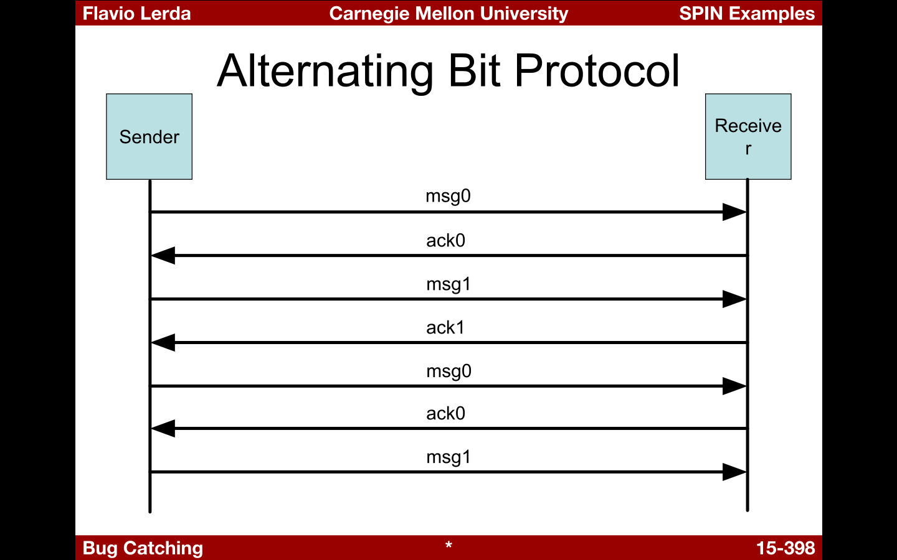

name: inverse layout: true class: center, middle, inverse --- #Model Checking in Cloud **Present and Future** .footnote[Go directly to [code repository](https://github.com/cvest/SpinExamples)] --- layout: false .left-column[ ### Table of Contents ] .right-column[ + Past + ] --- layout: false .left-column[ ## What is it? ] .right-column[ - **as a simulator** *rapid prototyping with a random, guided, or interactive simulations* - **as an exhaustive verifier**, *proving the validity of user specified correctness requirements* .red[<sup>1</sup>] - **as proof approximation system** *validation of very large system models with maximal coverage of the state space.* - **as a driver for swarm verification**.red[<sup>2</sup>],*which increases the chance of locating defects in very large verification models*. .footnote[.red[<sup>1</sup>] using partial order reduction theory to optimize the search <br> .red[<sup>2</sup>] using highly availiable cloud infrastructure] ] ??? A model checker principally follows two approaches: <br> <b> Verification </b> Tries to ascertain the correctness of detailed model <i>M</i> of system <b> Debugging </b> Searches for counter example, dissatisfying the property of system --- .left-column[ ## What is it? ## Why use it? ] .right-column[ Spin can help in removing perils of concurrent computing. - Deadlock - Starvation, Livelock - Under specification - *unexpected reception of messages* - Over specification - *dead code* - Violation of constraints - *buffer overruns* - *array violations* - Assumptions about speed - *logical correctness vs. real-time performance* ] --- template: inverse ## Overview of Spin --- name: how .left-column[ ## Spin ### - Overview ] .right-column[ Takes a model of system design and requirement as input, spin checks model vs requirement and if not met, then produces a counter example. + Focuses on proving correctness of process interactions + Not much focus on on internal computations of process + Communication + Synchronous primitives + Asynchronous message passing through buffered channels + Access to shared variables ####Methodology + Express unambiguous model + Express general correctness requirements as LTL formula ] --- name: how .left-column[ ## Spin ### - Semantics ] .right-column[ **SPIN a.k.a Simple Promella Interpreter** **Promella** *(Protocol/Process Meta language)* is a specification language used to decribe any finite state system. Promella basically has following attributes - type declaration - channel declaration - global variable declaration - process declarations - init process() ] --- name: how .left-column[ ## Spin ### - Semantics ] .right-column[ Promella Commands ```promella assignment always exec expression exec if non-zero (i.e., true) send (ch!) exec if channel ch is not full receive (ch?) exec if channel ch is not empty assert((expr)) always exec printf always exec skip always exec (equivalent to 1 or true) timeout variable, true if no other statement is exec if exec if at least one guard is exec do exec if at least one guard is exec atomic{...} exec if first statement is exec d_step{...} exec if first statement is exec goto jump to lablel break exit do-statement ``` ] --- .left-column[ ## Spin ### - Semantics ### - Sample Code ] .right-column[ ```promella active proctype P() { int value=123; int reversed; reversed=(value%10)*100+((value/10)%10)*10+(value/100); printf("%d %d\n",value,reversed) } ``` ```bash $ spin HelloWorld.pml ``` ] --- .left-column[ ## Spin #### State Explosion ] .right-column[ ```promella /******************************************** 1 iteration -- 4 states and increment of 3 All variables are default zero and unsigned 32768 / 3 *4 -> 43750 *********************************************/ init { /* file: stateexpo.pml */ short i = 0; do :: i = i+1; // (2 states) :: i = i+2; // (2 states) od } ``` ```bash $ spin -u43750 -p -l stateexpo.pml # run simulation for 43750 steps $ spin -a stateexpo.pml $ gcc pan.c -o pan $ ./pan # verifier ``` ] --- .left-column[ ## Spin #### State Reachability ] .right-column[ + Efficiency of a reachability analysis depends critically on the state space storage algorithm + By default, Spin uses a standard hash-table with linked lists to store states. ```promella #define N 2 init { chan dummy = [N] of { byte }; do :: dummy!85 :: dummy!170 od } ``` ```bash $ spin -m -a sreach.pml #use -m to ignore buffer overflow $ gcc -o pan pan.c $ ./pan ``` ] --- .left-column[ ## Spin #### State Reachability Analysis ] .right-column[ Write down: + T:* the sum of user time plus system time for the run* + S: *the number of states stored* + G: *the number of total number of states generated and analyzed* + V: *the vector-size (the amount of memory needed to store one state)* **G/T** gives you a measure for the efficiency of the run, and **S*V** gives you the amount of memory that is needed to store the state space without compression. Time also depends on storage function: ```bash $ time pan -w10 #hash table with 2^10 slots $ time pan -w2 #hash table with 2^2 slots ``` 1. Check number of hash conflicts ] --- .left-column[ ## Spin #### State Reachability Analysis Contd. ] .right-column[ Checking things in bitstate storage for N=20 ```bash $ spin -m -a sreach.pml # as before $ gcc -DBITSTATE -o pan pan.c # different $ time ./pan ``` 1. Check number of hash conflicts ] --- .left-column[ ## Spin #### Mutulal Exclusion Problem ] .right-column[ Verification of mutual exclusion problem is given by following code ```promella #define true 1 /* mutulalEx.pml */ #define false 0 bool flag[2]; bool turn; byte ncrit; int count=0; active [2] proctype user() { assert(_pid==0 || _pid==1); looper: flag[_pid] = true; turn = _pid; (flag[1-_pid] == false || turn == 1-_pid); ncrit++; assert(ncrit==1); ncrit--; flag[_pid] = false; goto looper; } ``` ] --- .left-column[ ## Spin #### Alternating Bit Protocol ] .right-column[ ```promella mtype = { msg, ack }; chan to_sndr = [2] of { mtype, bit }; chan to_rcvr = [2] of { mtype, bit }; active proctype Sender () { bit seq_out, seq_in; do :: to_rcvr!msg (seq_out) -> to_sndr?ack (seq_in); if :: seq_in == seq_out -> seq_out = !seq_out :: else -> skip fi od } active proctype Receiver () { bit seq_in; do :: to_rcvr?msg (seq_in) -> to_sndr!ack (seq_in) :: timeout -> to_sndr!ack (seq_in) od } ``` ] --- .left-column[ ## Spin #### Alternating Bit Protocol ] .right-column[ + Two processes want to communicate. + They want acknowledge of received messages + Sending window of one message + Each message is identified by one bit + Alternating values of the identifier  ** ''Every message sent by A is received by B, and acknowledged by A'' ** ] --- name: questions template: inverse ## Questions?? --- name: last-page template: inverse ## Arigato Gozaimasu!!